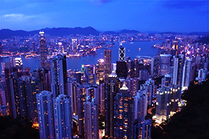
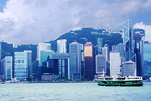
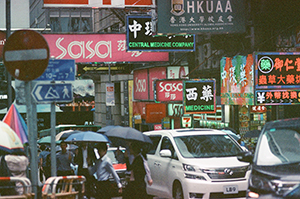
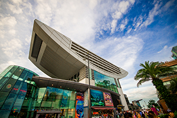

香港．說走就走
充滿國際魅力的都市
 在土地有限的情況下，想要創造空間的方法之一，就是建造摩天大樓，根據統計，香港有二百多棟超高大樓，而且造型新穎，樓與樓之間在帷幕牆之內相互輝映成趣。在尖沙嘴、中環一帶，隨時仰天長嘯，會有不斷的驚嘆！
著名的大樓包括全世界第四高的環球貿易廣場、國際金融中心、匯豐銀行總行、和和中心、中銀大廈、中環中心、長江集團中心、怡和大廈、中環廣場等等，除了在街上觀賞時可以仰望所以特別感到壯觀，到了太平山欣賞夜景，也因此特別亮麗，因為有這許多大廈連成的天際線分外美好。
關於這個網站
關於旅行的計劃
 這個夏天，我們一行人前往香港進行的自助旅行，每天的行程只有大概的方向但是沒有詳細的規劃，有時是集體行動，但有時會各奔東西。在同樣的時空到達不同的地點，期待感受不同的體驗。
關於旅行的記錄
 在這個網站中將整理在這幾天中我們曾經去過的、玩過的、吃過的、感受過的點點滴滴，無論您去過或是沒去過香港都能在這些文字、照片中想起心中曾有的記憶，或是編織計劃下一個旅行。在這裡準備了以下的單元供您參考：
- 景點特搜：在香港旅遊時經過的景點，透過文字與圖片進行簡短介紹。
- 玩樂地圖：以地圖的方式標示相關的景點位置。
- 文字旅行：記錄並分享旅行中的心情點滴。
- 城市映像：分享旅行中的照片、影片等內容。
- 相關資訊：提供在旅行前所準備的資訊。
- 互動交流：提供一個可以互動交流的平台。
最後，感謝旅行中曾給我們幫助、加油甚至是微笑的人們。
2018年02月26日